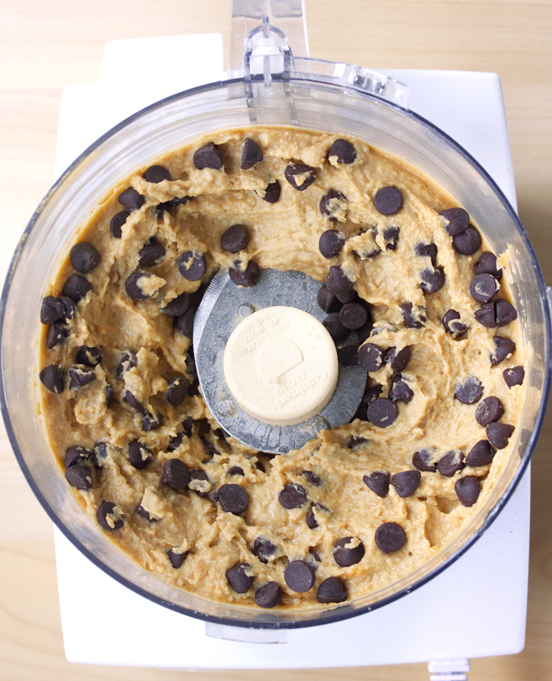

Healthy Cookie Dough Dip

Image Credit
Description
Recipe description goes here
Ingredients
- 1 can chickpeas or white beans, drained very well
- 1/8 plus 1/16 teaspoon salt
- 2 teaspoons pure vanilla extract
- 1/4 cup nut butter of choice (almond or cashew is recommended)
- if needed: up to 1/4 cup milk
- 3 tablespoons brown sugar (or up to 2/3 cup, depending on preference)
- 1/3 cup of chocolate chips
- 2-3 tablespoons of oats or flaxmeal
Steps
- Add all ingredients (except chocolate chips) to a strong food processor and process until very smooth
- Mix in chocolate chips
- Chill in refrigerator, approximately 30-60 minutes
- Serve with graham crackers for dipping
Recipe Credit